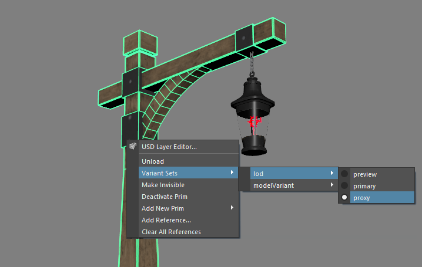
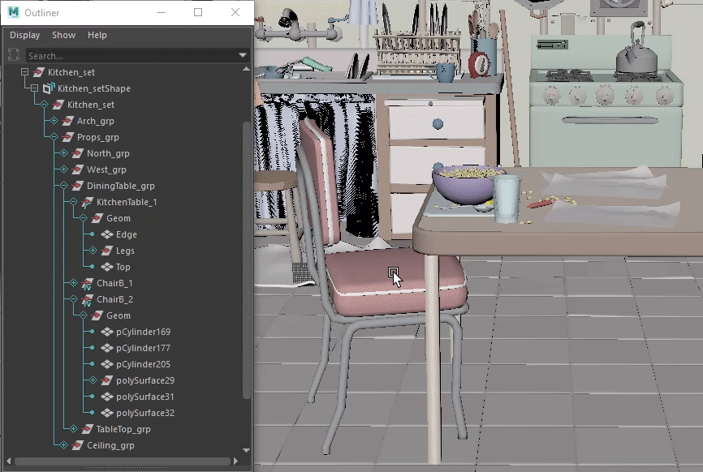

Select USD data in the Viewport
When working with a USD set in Maya, clicking in the Viewport selects an exact prim. This often results in the partial selection of a model. If you want to manipulate an entire model or set, you need to manually select it in the Outliner. You can override this behavior with the optionVar UsdSelectionKind and UsdPointInstancesPickMode. Choose a selection mode to reflect changes when you select prims in the Viewport and Outliner. Note: Default fallback selection mode is by prim.
You can move prims in the Viewport using ALT + arrow keys. This keyboard function will move USD data, just as it does Maya data.
Right-Click Context Menu
When you right-click a USD object in the Viewport, a contextual marking menu appears to help you select the exact object(s) you want to modify.

About Selection by Kind and Point Instancers
Kind is a type of metadata that is used to classify prims in USD. It is an extensible system that is based on a Kind hierarchy that has pre-loaded string values. These string values determine the selection behavior in the Viewport. You can also define custom strings that are unique to your production pipelines.
The Kind Hierarchy:
- (none): Selection mode for prims that have no kind set.
- Model: Selection mode for prims in the model hierarchy (including prims set to group, assembly and component kind).
- Group: Selection mode for prims set to group kind (including prims set to assembly kind). Tip: Set group kind in the Attribute Editor > Metadata to prims that are grouped.
- Assembly: Selection mode for prims set to assembly kind. Tip: Set assembly kind in the Attribute Editor > Metadata to prims that are part of an important group.
- Component: Selection mode for prims set to component kind. Tip: Set component kind in the Attribute Editor > Metadata to prims that are a collection of assets.
- Group: Selection mode for prims set to group kind (including prims set to assembly kind). Tip: Set group kind in the Attribute Editor > Metadata to prims that are grouped.
- Subcomponent: Selection mode for prims set to subcomponent kind. Tip: Set subcomponent kind in the Attribute Editor > Metadata to prims that are an individual asset. {Custom}: Selection mode for prims set to {custom name} kind.
PointInstancer is a "multi instancer", as it allows multiple prototypes to be scattered among its "points". The PointInstancer schema is designed to scale to billions of instances, which motivates the choice to split the per-instance transformation into position, (quaternion) orientation, and scales.
- Note: Primvars authored on a PointInstancer prim should always be applied to each instance with constant interpolation at the root of the instance.
Universal Manipulator on USD objects
You can use the Universal Manipulator  to move, rotate and scale prims. To access the Universal Manipulator, go to Modify > Transformation Tools > Universal Manipulator or use the shortcut Ctrl+T. This functionality is only available in Maya 2025.
to move, rotate and scale prims. To access the Universal Manipulator, go to Modify > Transformation Tools > Universal Manipulator or use the shortcut Ctrl+T. This functionality is only available in Maya 2025.
Activate Selection Modes
Using the interface in Maya
Using Maya interface, you can choose your USD selection mode in the Viewport.
- Click Select > Under Universal Scene Description, USD Selection Mode and choose from the options for Kind and Point Instancers.
Using the Command Line for Selection by Kind
- Selection by Kind has the following modes:
optionVar -sv "UsdSelectionKind" "model" ;Selects the nearest ancestor that is a model or its subcategory.optionVar -sv "UsdSelectionKind" "group" ;Selects the nearest ancestor that is a group or its subcategory.optionVar -sv "UsdSelectionKind" "user-defined" ;Selects the nearest ancestor that is a user-defined kind or its subcategory.optionVar -sv "UsdSelectionKind" "" ;Selects the exact prim that is picked in the viewport. This returns Viewport selection to its default behavior.
In the following example, we override the default Viewport selection behavior to select entire models in the USD set:

Using the Command line for USD Point Instance Selection
You can also use the optionVar (that was previously UsdPickMode) which is now UsdPointInstancesPickMode with the possible values of: pointInstancer, instances, or prototypes.
- Point Instance Selection has the following modes:
optionVar -sv "UsdPointInstancesPickMode" "PointInstancer" ;Selection mode that is the equivalent of being unset. Selecting an instance would return the instancer prim.optionVar -sv "UsdPointInstancesPickMode" "Instances" ;Clicking an instance would return the specifc instance.optionVar -sv "UsdPointInstancesPickMode" "Prototype" ;Selects the original prototype prim in the Viewport.optionVar -sv "UsdPointInstancesPickMode" "" ;Selects all individual instances of the same prototype.
Combination Selection Modes
If the object picked in the viewport is a point instance, this optionVar controls what that pick resolves to the PointInstancer prim (a specific point instance scene item, or the prototype prim being instanced, respectively). This results in a more flexible way to use both the point instances pick mode and the selection kind in combinations.
UsdSelectionKind, then the kind and prototypes pick modes are exactly the same. A UsdView style selection menu can be implemented as follows:
- For Prims: UsdSelectionKind = '', UsdPointInstanceSelection = '[Anything]'
- For Models: UsdSelectionKind='model', UsdPointInstanceSelection = '[Anything]'
- For Instances: UsdSelectionKind='[Anything]', UsdPointInstanceSelection='instances'
- For Prototypes: UsdSelectionKind = '', UsdPointInstanceSelection = 'prototypes'
Isolate Select Support
Isolate the display of USD prims in the viewport. Use the isolate Select command in the view panel displayed above the scene view to show only certain objects or components in your USD scene.
Related Concepts: For more information, see kind and metadata in the Pixar USD Glossary and Kind: Extensible Categorization.